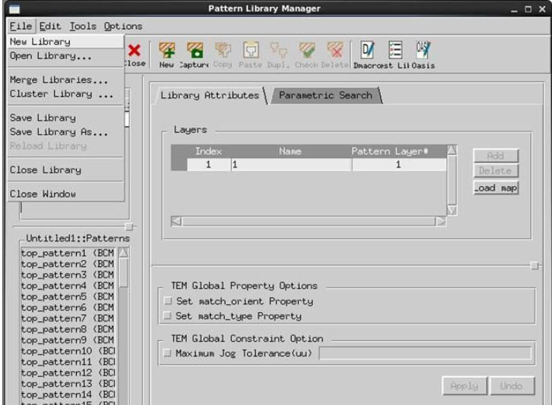
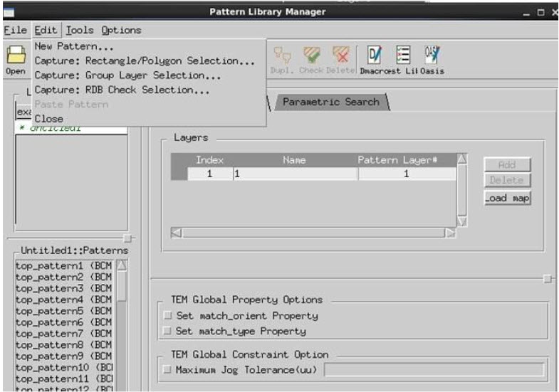

You can create
a pattern matching library using the Pattern Library Manager in
Calibre WORKbench.
Procedure
- Invoke Calibre WORKbench and
select Verification > Run PM Capture.
- Invoke the Pattern Library
Manager
- To create a new library, select File > New
Library.
Figure 1. Pattern Library Manager
File Menu
- You can add patterns to the
library using options from the Edit menu
of the Pattern Library Manager:
Create a pattern manually
and add it to the library
Add patterns from RDB
checks.
Add patterns using a group
layer selection
Add patterns from polygons
selected from Calibre WORKbench.
Figure 2. Pattern Library Manager
Edit Menu
- The following are known limitations:
The Capture options in
the Pattern Library Manager are slower than the DFM Pattern Capture
command.
The pattern property supports
only numeric values
The Pattern Library Manager
allows you to add constraints and properties to the added patterns.
- Complete details on the Pattern
Library Manager can be found in the Calibre Pattern Matching User’s Manual.